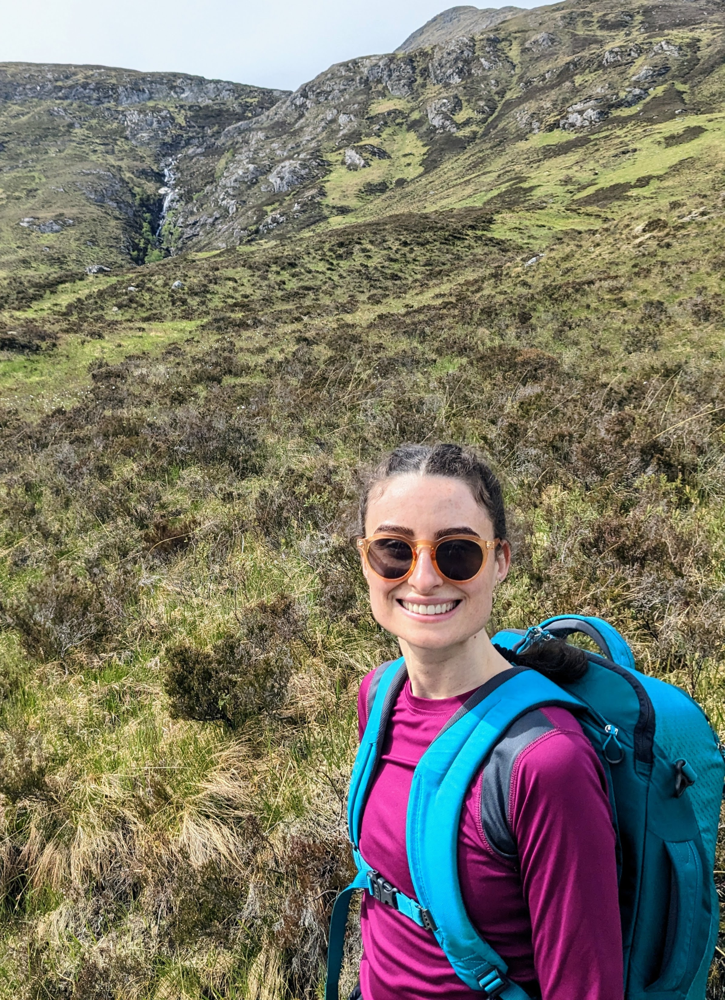

 e-mail mpopie AT northwestern DOT edu office Lunt B22
pronouns She/her
I am a Boas Assistant Professor at Northwestern University.
My interests are primarily in homotopy theory and its applications to problems in geometry and topology. I often think about (unstable) topological vector bundles and how they can be studied using tools from homotopy theory.
I am also interested in homotopical aspects of algebraic geometry, e.g., motivic homotopy theory and algebraic vector bundles. My interest in algebro-geometric phenomena goes back to my undergraduate thesis, where I studied extremal effective divisors on the moduli space of stable rational curves with marked points.
I have also worked on various topics related to abstract homotopy theory and its applications, including homotopy theory of graphs and homotopy type theory.